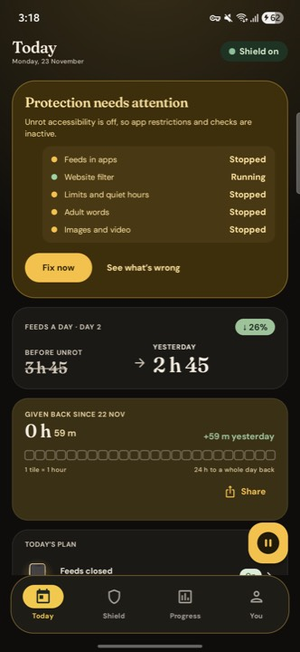
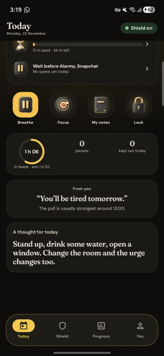
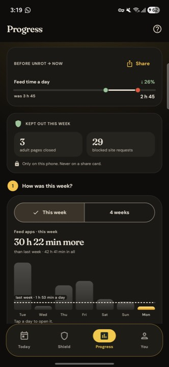
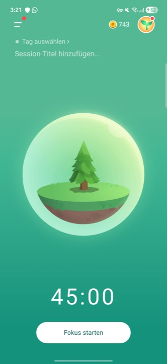
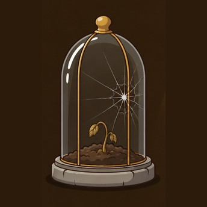
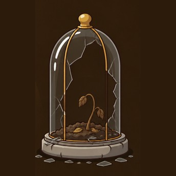
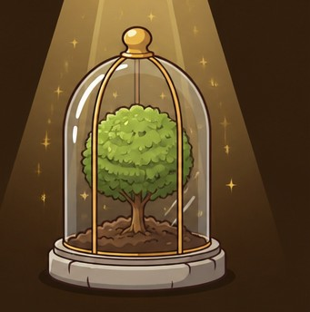
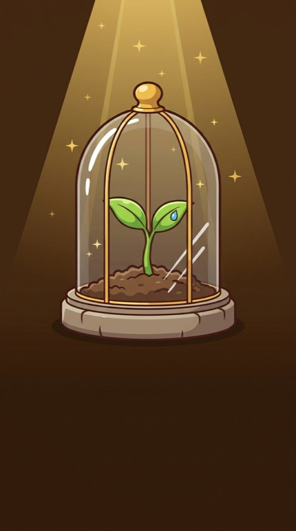
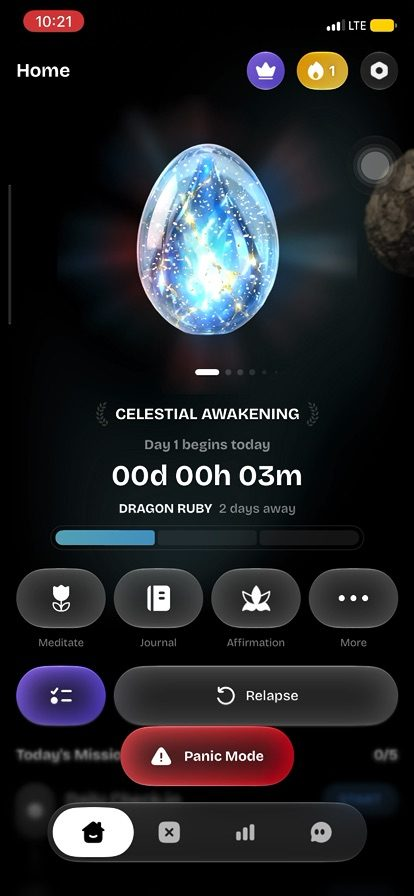
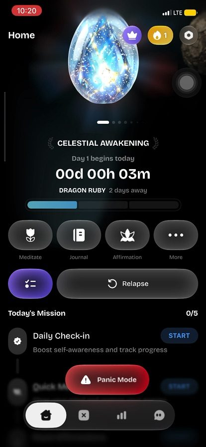

The Glasshouse
One sprout, one glass dome, one garden. The sprout is what you get back, and it lives on what you do. The glass is what protects you. The garden is every day you've had. Every screen of Unrot is built from those three things, in the dark, object-first style of Opal and CleanPath.
| Object | What it means | Where it lives | Real data behind it |
|---|---|---|---|
| The sprout | Time you got back from endless feeds. Grows through seven stages. Scrolling only slows it; adult content can wilt or kill it. | Today, the stage-up moment, the share card | Feed time before Unrot minus feed time now, from Android's usage record; pauses taken add a little |
| The glass dome | Your protection. Five panes: feeds, adult sites, limits and quiet hours, adult words, images. A pane that is off is shown open. | Shield, Today's status chip, the block screen | Live state of the filter, app watching, rules and image checks |
| Dewdrops | Each pause you took today. | Today's sprout | Breathe and “wait before opening” counts |
| Wilting | You tried to open adult content and Unrot stopped it. Breathe within 10 minutes and the sprout lifts again. | Today, the block screen | A blocked adult site, search or image |
| A dead sprout | Adult content got through: protection was off or paused. Today's sprout dies and stays in the garden as a dried plant; a new seed goes in. Your total never goes down. | Today, the garden | Adult content seen while a pane was open or protection was paused |
| Water | Yesterday's time given back, poured in once a day by you. | A button beside the growth bar | Yesterday's feed time against your before |
| The garden | Every past day as a small plant on a shelf. A heavy day is a small plant, never a dead one. | Progress | Daily feed time, adult content kept out, phone time |
| The gardener | You: your name, your reason, your note to yourself, your commitments. | You | What you wrote in setup |
Six apps, and what each taught
Opal
Take: a dark scene filling the screen, one precious object on a stone, three rounded chips, tap the number for its meaning, status in a corner chip. Its home was simplified in 2023 because the score was “too complex and hard to read”.
CleanPath
Take: the object's name between laurels, a bar to the next stage, one big named button for the hard moment, a picture of the exact setting to switch on. Refuse: the counter that drops to zero.
QUITTR
Take: the next stage peeking in from the side so you can swipe to it, four round actions under the numbers. Refuse: a “Relapses” count on the home.
Forest (on your phone)
Take: the tree inside a glass bubble; a forest that keeps every day; species, with some earned by challenges and seasons; the withered tree that stays; what the time was for; Plant Together; real trees paid from revenue (over 2 million with Trees for the Future). Refuse: coins and a shop, killing the tree for opening another app, and one person's slip killing a whole group's tree.
Bloom
Take: a small daily ritual (a watering can earned by keeping your rules), and each rule as its own plant. Refuse: “You scroll, it wilts.”
Finch
Take: the companion feels alive: it rests at night and changes with the day, which brings people back without nagging.
Never in Unrot
- Wiping your history. When adult content gets through, today's sprout dies and a new seed goes in, but your total time given back and every plant in your garden stay. Research on slips (Marlatt and Gordon's abstinence violation effect) says a full wipe is what makes people give up.
- Punishing scrolling. Feeds only slow the growth; only adult content can wilt or kill the sprout.
- Numbers we don't measure, fake reviews, scare scores, coins you buy, a paywall before value.
- Adult content on a share card. It stays visible to you and private from everyone else.
Everything CleanPath and Opal do, and everything Unrot does
| Feature | CleanPath | Opal | Unrot today | In the glasshouse |
|---|---|---|---|---|
| Main progress object | Egg that evolves, day timer | Gem, Score 0–100 | Day card, before → now card | ADAPTSprout under glass, 7 stages, grows by time given back, never resets |
| Hard-moment button | Panic Mode | — | Breathe button, Quick Settings tile, launcher shortcut | HAVEOne big gold Breathe on every tab, same tile and shortcut |
| Something to do instead | More Activities: walk, shower, workout | — | “What do you need?” after the pause | ADD“Instead” list after Breathe; each one done is a dewdrop |
| Daily missions | Today's Mission 0/5 | — | — | ADDToday's three: check in, take one pause, stay under your before |
| Journal | My Journal with a prompt | — | My notes | ADAPTMy notes opens with one prompt; stays on the phone |
| Daily words | Affirmations (wealth, income) | — | A thought for today | ADAPTA thought tied to your own why, never money talk |
| Relapse | Relapse button resets the counter | Streak resets | — | ADAPTAdult content kills today's sprout (a wilt first, if Unrot stopped it). Your total and garden stay. “A hard moment” turns it into one change. |
| Daily numbers | Recovery %, “superpowers” | Sleep · Focus · Rest | Feed time, pauses, kept out | ADAPTThree chips for the three fronts: feeds, adult kept out, phone today |
| Number explained | “Understanding your journey” sheet | Score page with bars vs your average | Progress explainer sheet | ADDYour sprout page: each front against your own before |
| Day by day history | — | ‹ Today ›, history is Pro only | Progress day page | ADD‹ Today › on the sprout page, free, every day Android kept |
| Per-app time | — | Bars per app, red if “distracting” | On Progress | ADAPTPer-app today; colour comes from your real rules |
| Block now / focus | Block Now | Timer, Focus sessions, Deep Focus | Focus now | ADAPTFocus under glass: the dome closes, a ring counts down, the sprout grows faster |
| Schedules | Schedule blockers | Recurring sessions | Quiet hours | HAVEQuiet hours, shown as night over the glass |
| Daily limits | Daily time limit | App limits | Daily limits | HAVE |
| Pause before opening | — | — | Wait before opening | HAVEClosing it adds a dewdrop |
| Adult websites | 395k sites + words | — | 229k-site filter, words, Telegram channels, risky browsers | HAVEA pane of the glass |
| Adult images | — | — | Images and video check, people blur | HAVEA pane of the glass |
| Your own lists | Block list / allow list | Never / always allowed | Your lists, sites and words | HAVE |
| Strict mode | — | Deep Focus | Protection lock, uninstall protection | ADAPT“Seal the glass”: pick days, hold to seal |
| Someone who checks on you | — | Friends | Guardian pairing | HAVE |
| Milestones | Gems the egg turns into | Gem milestones | Day milestones | ADDStage gallery: reached stages with dates, next ones as shadows |
| Celebration | New gem moment | Streak card | Milestone card | ADDNew-stage moment, week card |
| Picture of the setting | Safari guide picture | Permission pill | Show me sheets | HAVEOpened from the corner chip |
| Home-screen widget | — | Widget | Day widget | ADAPTThe dome as a widget, with Breathe |
| Reminders | Streak reminders | Session reminders | Hard-hours nudge, weekly report | HAVERewritten in sprout words |
| Grey screen | — | — | Grey screen | HAVEIn Tools |
| Share | — | Share score | Share card | ADAPTYour sprout as a card; never any adult data |
| Arabic, right to left | — | — | Full | HAVE |
| AI chat | Haven | — | — | NOIt would send private moments off the phone |
| Onboarding quiz | 13 questions, then 95/100 “severe” | Chat questions, “15 years of your life” | Calm questions | ADAPTCleanPath's flow: one question a screen, a progress bar, your picture, a path, a pledge. The picture is plain arithmetic from your own answers, never a score. |
| Account, paywall first | Sign-in, paywall before value | Sign-in, paywall | None | NOEverything stays on the phone |
Four moments that matter, step by step
The pull, at 13:00
Every step is one tap. The person ends on Today seeing that the moment counted.
Day one
Adult content, tried and stopped
Adult content gets through
A heavy day
Bedtime
Unrot today, as it runs on your Samsung




Cartoon, painted: one sprout in every state
Painted with Higgsfield in one sheet, so every state matches: clean outlines, flat colour, the same glass, gold and stone. Every phone screen below uses these. The rest of the app (wood, seed box, garden) is drawn to match.








The first painted image sets the style; the sheet was made from it. Still to paint, from the same reference: each tree kind (pine, cherry, oak…), the open pane for Shield, the dawn look, and the sprout for each in-between stage. About one Higgsfield credit each on GPT Image 2; the account has none left on the free plan.
First run, part 1 · You
Twenty-four screens in four chapters, the way CleanPath tells it: the problem in your own numbers, what causes it, what helps, then your plan. The bar at the top has one segment per chapter, so a longer setup never feels endless. Skip is always there.
First run, part 2 · Why it's hard
First run, part 3 · What helps
First run, part 4 · Your plan
Home, like CleanPath's
CleanPath's home, from your recording, next to ours. Same order top to bottom, same round buttons and floating pill; our sprout, our numbers, our features.


Today
Breathe, like CleanPath's Panic Mode
The floating Breathe opens this, like CleanPath's red Panic Mode opens their meditation: a calm start, 3-2-1, a flower that opens and closes with your breath, then what changed.
Progress, like CleanPath's Analytics
Home in every state
The same home, changed only where the moment needs it: a pane open, the sprout wilting, night, and day one.
From the home: check in, more, hold Breathe
When adult content is tried, or gets through
Moments
Shield, Progress, You
Hard moments
When an app is blocked
Growth, history and sharing
Trees and your wood (from Forest)
From Forest's app and website: species, a forest that keeps every day, withered trees, tags, Plant Together and real trees. Taken our way: seeds are earned, never bought; only adult content leaves a dry tree; a friend can never kill yours.
Outside the app
Motion and touch, one rule per moment
| Moment | Motion | Haptic | Reduced motion |
|---|---|---|---|
| Open Today | The halo breathes slowly (5 s); light rays drift. | None | Still halo |
| Pour in water | Nine drops fall into the dome, the bar fills, the number counts up. | Light tick per drop, a soft thud at the end | Number changes at once |
| New stage | Full screen: rays turn, the plant grows from the last stage to the new one. | One confirm | Shown already grown |
| Swipe stages | The dome slides; the next stage is a shadow until reached. | Tick at each stage | Cross-fade |
| Breathe | The orb grows for 4 s and shrinks for 4 s, three times. | A gentle pulse at each turn | Words only: “in”, “out” |
| Close a pane | The amber pane fills with glass and turns clear. | Confirm | Colour change only |
| App behind glass | The dome lowers over the app tile. | One soft knock | Dome already down |
| Focus | The ring counts down around the dome; the rim glows gold. | None until the end, then confirm | Ring without glow |
TalkBack
The scene is one label: “Your sprout, two leaves, 59 minutes given back, 1 minute to a young plant.” Every chip and pane is read as words, never only as colour.
Large text and small phones
The number, bar and chips wrap below the dome; the dome shrinks first, text never clips. Tested at 200% font and on a 360 dp wide phone.
Light, dark and Arabic
Dark night-gold by default, dawn in light mode, full right-to-left in Arabic. Status colours always come with a word.
Android 6 and up
The scene is drawn in code (Compose Canvas, gradients), no 3D engine, so it runs on minSdk 23 and stays light on battery.